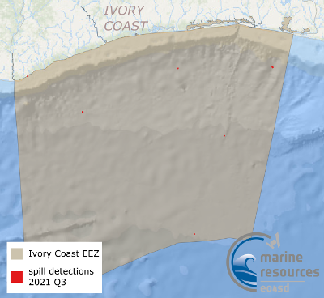

| Title | Quicklook | Description | Place | Time Period of Content | Download |
|---|---|---|---|---|---|
| Water quality for large geographical regions |
(221 kB) |
Example of a Chl-a map for West Africa | Côte d'Ivoire, Ghana Gulf of Guinea |
April 29, 2020 |
Example in GIS portal User Guide (PDF, 2.1 MB) |
| Ivory Coast, Oil Spill Detection Service |  (337 KB) |
Oil Spill Detection maps include oil spill vector data and the backscatter coefficient SAR images of Benin. The data are provided in Google Maps KML format. | Benin | Jan-Sep 2021 |
Full oil spill dataset available on request (liat@pml.ac.uk) Sample data (*.kml) Metadata (XML, 4KB) |
| Côte d'Ivoire Coastal Landcover (2020) | (2.5MB) |
This is the Côte d'Ivoire land-cover classification data (2020) produced by Brockmann Consult GmbH for the Marine and Coastal Resources project.This is under the initiative Earth Observation for Sustainable Development (EO4SD) by the European Space Agency. This raster file is generated from sentinel-1 (10 products; 2019), 1 mosaic Sentinel-2 (2 products; 2020). The supervised classification method used is the Maximum Likelihood Classification (MLC). The land-cover sample data(training areas) used were desktop-generated with support from high-resolution Google-Earth images. |
Côte d'Ivoire | 2020 |
GIS data (TIF, 131.3MB) Metadata (XML, 4KB) |
| Côte d'Ivoire Historical Shorelines, Shoreline Change Rates (2000-2020) - Version 1 | (592 KB) |
Version 1 - Unvalidated. This layer consists of data used to map shoreline change rates in Cote d'ivoire produced by the National Oceanography Centre for the Marine and Coastal Resources project under the initiative Earth Observation for Sustainable Development (EO4SD) by the European Space Agency.Geodatabase contains: Cote d'ivoire Shorelines - Each shoreline delineated from the 20-year period Shoreline change rates - transects Historical shorelines between 2000-2020 can be visualised, created by annual median composites of Landsat 7, 8 and Sentinel 2 imagery which delineates the approximate mean high water mark. Methods are inspired by Coastsat, a Google Earth Engine-enabled open-source software toolkit that delineates shorelines at any sandy coastline worldwide from over 30 years of publicly available satellite imagery (https://github.com/kvos/CoastSat). |
Ghana | 2000 - 2020 |
Shapefiles (ZIP, 10.4 MB) GDB file (ZIP, 5.1 MB) Metadata (XML, 8KB) |